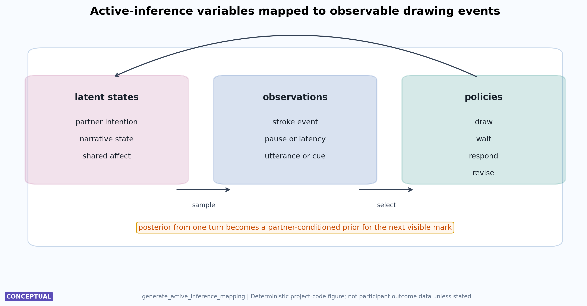
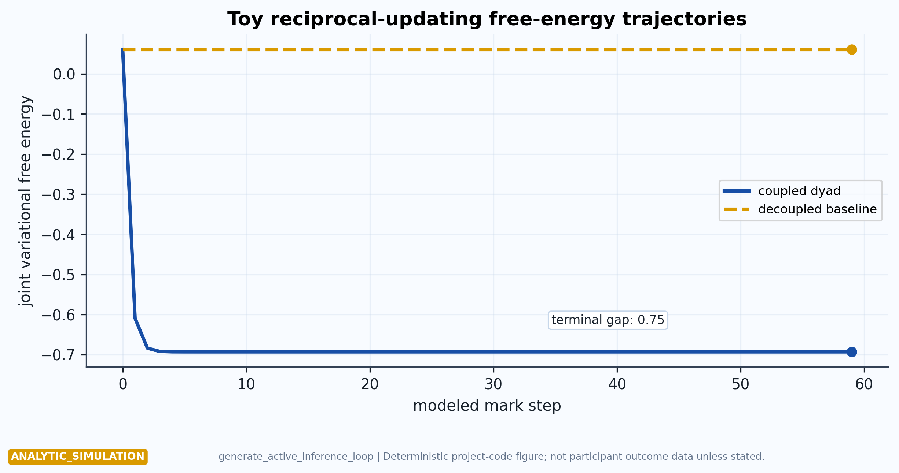
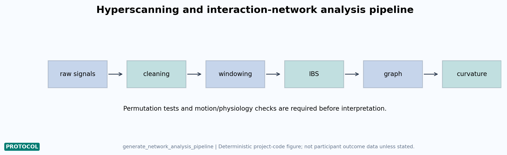
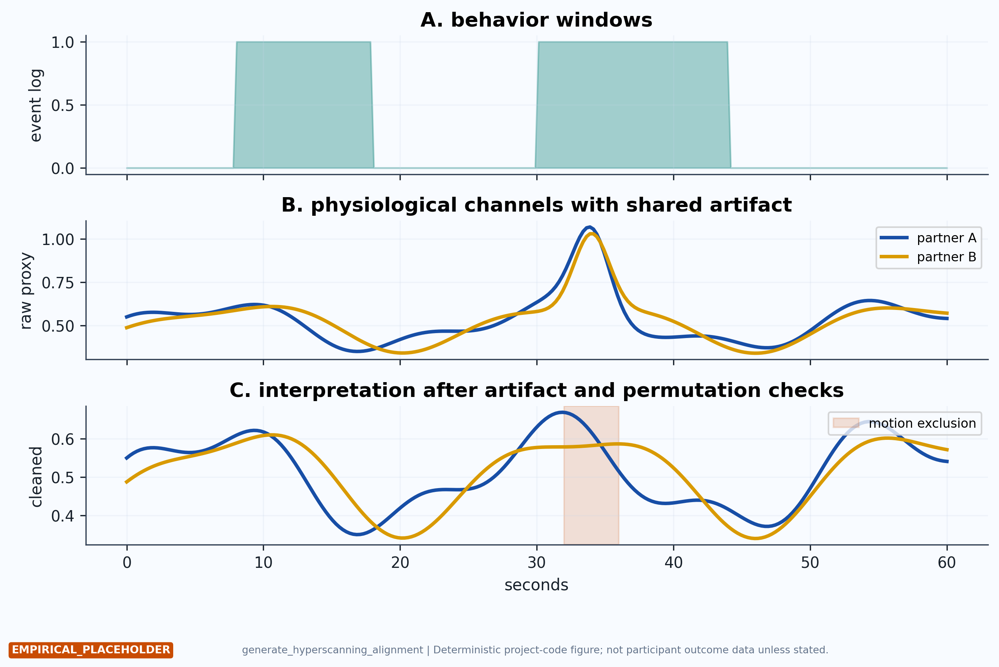
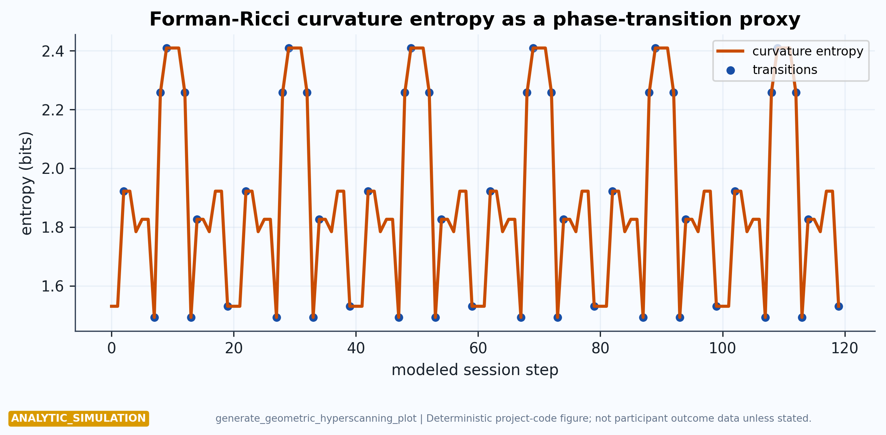
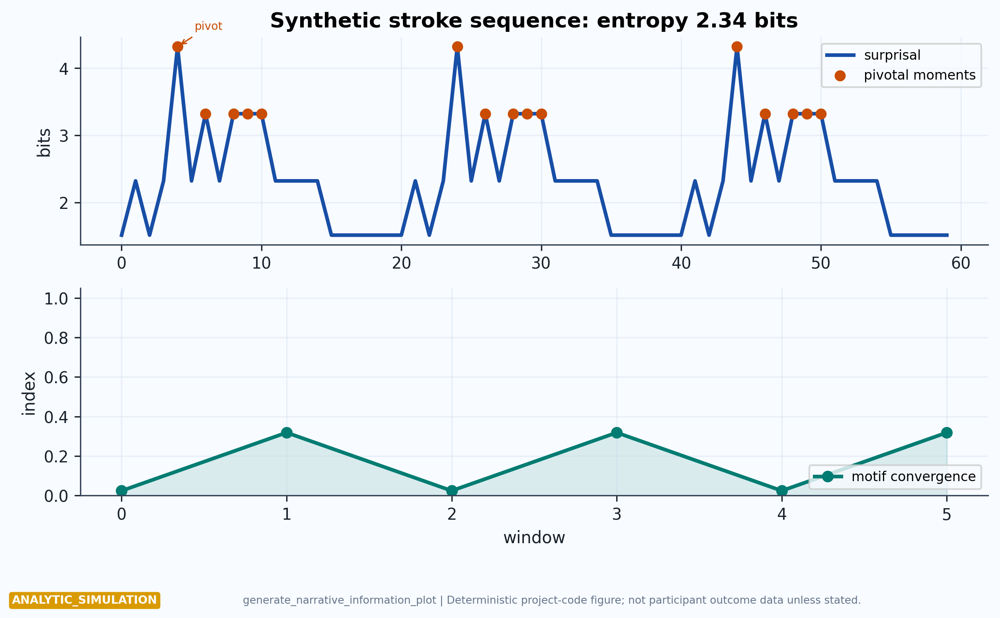
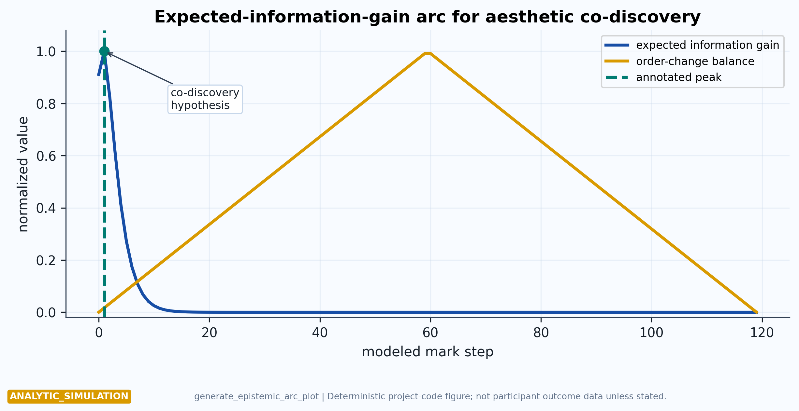

Appendix: Free-Energy and Active-Inference Formalisms
This appendix holds the mathematical and diagnostic primitives used by the main manuscript. The consolidation is deliberate: active inference remains a modeling lens in the main line, while the formal details sit here where readers can inspect assumptions, generators, labels, and evidence boundaries together. The appendix draws on established active-inference and free-energy treatments [friston2010fep; friston2017process; parr2022activeinference; friston2023simpler], discrete-state synthesis work [dacosta2020discrete], and interactional accounts of communication and second-person modeling [vasil2020communication; schilbach2013secondperson; redcay2019secondperson; bolis2024secondperson].
Event-to-Model Mapping
[@fig:active_inference_mapping] maps DigiPPPiP’s theoretical terms to observable design elements. Latent states are partner intentions, narrative states, and shared affect. Observations are strokes, pauses, utterances, and interface events. Policies are drawing, waiting, responding, and revising. The figure is included to prevent active inference from becoming decorative terminology: every model term has to be tied to a protocol event or dropped.

generate_active_inference_mapping(); read the columns as
latent states, observations, and policies, with arrows showing how
partner-conditioned beliefs can update through visible marks. It
supports the active-inference appendix by tying terms to measurable
protocol events. The mapping is conceptual; fitted parameters and
failed-baseline checks would be needed for mechanism
claims.Minimal Free-Energy Primitive
The project uses a Gaussian point-belief model as a minimal conceptual primitive. Variational free energy is:
\[ F(\mu)=\frac{1}{2}\pi_p(\mu-\mu_p)^2+\frac{1}{2}\pi_l(o-\mu)^2-\frac{1}{2}\log \pi_p-\frac{1}{2}\log \pi_l \] {#eq:vfe}
The expression in [@eq:vfe] defines \(\mu\) as the current belief, \(\mu_p\) as the prior mean, \(o\) as the canvas observation, and \(\pi_p,\pi_l\) as the prior and likelihood
precisions. The analytic posterior mean used by
src/active_inference.py is:
\[ \mu^\ast=\frac{\pi_p\mu_p+\pi_l o}{\pi_p+\pi_l} \] {#eq:posterior}
In a coupled dyad, each partner’s previous posterior becomes part of the other’s next prior. [@fig:active_inference_loop] contrasts that coupled case with a decoupled baseline. The terminal free-energy values from the deterministic conceptual run are -0.693147 and 0.061153, respectively; the absolute reduction is 0.7543. These are model outputs, not human-subject measurements.

generate_active_inference_loop() from
simulate_dyadic_session(). Read the solid and dashed lines
as toy-model baselines for reciprocal versus non-reciprocal prior
updating across mark steps. The plot supports the modeling argument that
coupling can be formalized, not that couples improve. Empirical
validation would require observed behavior and model-comparison
evidence.Hyperscanning and Network Geometry
Geometric hyperscanning is a candidate measurement vocabulary for empirical studies, not a shortcut to interpreting synchrony. Near-infrared spectroscopy (NIRS)-based cooperation studies and hyperscanning reviews motivate dyadic measurement [cui2012nirs; czeszumski2020hyperscanning; czeszumski2022cooperative; nam2020hyperscanningreview], yet shared stimulus timing, motion artifacts, physiology, task structure, preprocessing choices, and analytic windows can all inflate apparent coupling. Methodological cautions in fNIRS and hyperscanning warn against interpreting cross-brain coherence as direct evidence of shared minds, empathy, or relationship improvement [tachtsidis2016fnirs; hamilton2021hyperscanning; zimmermann2024methodological]. Translational hyperscanning arguments are valuable only when they remain close to applied contexts and family or dyadic care questions rather than treating synchrony as a generic marker of social quality [provenzi2022translational]. [@fig:network_analysis_pipeline] therefore separates acquisition, cleaning, windowing, synchrony estimation, graph construction, and curvature analysis before interpretation.

generate_network_analysis_pipeline(); read the boxes left
to right as acquisition, cleaning, windowing, synchrony estimation,
graph construction, and curvature analysis. It supports the methods
guardrail that signal processing precedes interpretation. The pipeline
is analytic scaffolding; actual studies must report exclusion windows,
preprocessing choices, and permutation controls.[@fig:hyperscanning_alignment] makes the alignment problem more concrete. Behavioral events, physiological channels, and exclusion windows must be synchronized before a study can ask whether a neural measure tracks co-drawing, repair, rupture, or co-regulation. The figure deliberately includes a shared artifact window to show how apparent coupling can arise from non-social signal contamination.

generate_hyperscanning_alignment()
should be read vertically: behavioral event windows, raw physiological
channels with shared artifacts, and cleaned channels after exclusion. It
supports the caution that synchrony claims require co-registration and
artifact handling. The signals are simulated; measured analyses would
need device-specific quality metrics and null models.For a simple unweighted inter-brain graph, the Forman-Ricci curvature used here is:
\[ \mathrm{Fr}(uv)=4-\deg(u)-\deg(v) \] {#eq:forman_ricci}
The implementation uses Forman’s cell-complex curvature vocabulary and dynamic-network change-detection applications as method antecedents [forman2003bochner; weber2016forman]. The curvature-entropy diagnostic in [@fig:geometric_hyperscanning] follows recent proposals to treat topological reconfiguration in inter-brain networks as a marker of affective phase transitions [hinrichs2025geometric]. The conceptual run has maximum curvature entropy 2.4087 and detects 48 transition events under the configured threshold.

generate_geometric_hyperscanning_plot() from synthetic
network snapshots; read the red curve as curvature entropy and blue
points as candidate transitions. It supports the proposal that graph
diagnostics could mark rupture or repair windows. The figure is not
participant hyperscanning, and empirical use would require
artifact-robust network estimation.Narrative Information and Aesthetic Discovery
Narrative also fits the active-inference vocabulary. Narratives guide event segmentation, identity coherence, and policy selection [bouizegarene2024narrative; veisserie2020thinking]. In DigiPPPiP, a mark sequence can be treated as a symbolic trajectory with Shannon entropy and surprisal [shannon1948mathematical]:
\[ H(X)=-\sum_i p(x_i)\log_2 p(x_i) \] {#eq:shannon}
The expected-information-gain arc used for aesthetic co-discovery is:
\[ \mathrm{EIG}(t)=c\,t\,e^{-\lambda t} \] {#eq:epistemic_arc}
[@fig:narrative_information] and [@fig:epistemic_arc] translate those commitments into inspectable conceptual plots. The configured alphabet supports a maximum entropy of 2.585 bits, and the epistemic arc peaks at model step 2.

generate_narrative_information_plot() from
src/narrative.py; read the upper panel as surprisal with
pivotal-moment markers and the lower panel as convergence toward a
repeated motif. It supports the narrative-information appendix by making
the entropy primitive inspectable. The sequence is synthetic, and
participant claims would require coded stroke alphabets and inter-rater
checks.
generate_epistemic_arc_plot() from
src/aesthetics.py; read the normalized curves as an
illustrative relation between curiosity, order, change, and the marked
“aha” peak. It supports the appendix’s modeling vocabulary. The plot is
conceptual, and validation would require event-aligned experience
reports or behavioral measures.Together, these equations function as a falsifiable grammar for future studies. They succeed only if they help specify what should be measured, what comparison would matter, and what result would count against the interpretation. A free-energy curve that improves only because of parameter choices, a synchrony measure that disappears after artifact controls, or an entropy score unrelated to participant reports would all narrow the framework rather than embarrass it.